The goal of this slide set is to show you how to make publication ready graphs and expand on what we have done in the basic plotting series. The goal of this is to use GGPlot and later on I will show you how to use patchwork which allows more flexibility in plot layout.
# install.packages("devtools")
# devtools::install_github("thomasp85/patchwork")
# load the libraries each time you restart R
library("readxl") # read in excel files
library("tidyverse") # dplyr and piping and ggplot etc
library("lubridate") # dates and times
library("scales") # scales on ggplot ases
library("skimr") # quick summary stats
library("janitor") # clean up excel imports
library("patchwork") # multipanel graphs##Read files
## Long fromat data
The key to plotting in GGPlot is to use long format data. Later on we will cover how to convert between wide and long fomat. You can look at wide fromat data and see the difference.
# Long format data
south_long.df <- read_csv("data/south_lake_long.csv")## Parsed with column specification:
## cols(
## permanent_id = col_double(),
## lake_name = col_character(),
## date = col_date(format = ""),
## group = col_character(),
## org_l = col_double(),
## year = col_double()
## )head(south_long.df)## # A tibble: 6 x 6
## permanent_id lake_name date group org_l year
## <dbl> <chr> <date> <chr> <dbl> <dbl>
## 1 131846593 South 1994-06-30 cladoceran 3.89 1994
## 2 131846593 South 1994-07-27 cladoceran 6.11 1994
## 3 131846593 South 1994-08-31 cladoceran 5.44 1994
## 4 131846593 South 1995-06-19 cladoceran 1.26 1995
## 5 131846593 South 1995-08-08 cladoceran 4.1 1995
## 6 131846593 South 1995-09-13 cladoceran 2.82 1995This is the format you typically enter data into spreadsheet is. You can use TidyR and gather or pivot_longer to convert this to the long format.
south_wide.df <- read_csv("data/south_lake.csv")## Parsed with column specification:
## cols(
## permanent_id = col_double(),
## lake_name = col_character(),
## date = col_date(format = ""),
## cladoceran = col_double(),
## copepod = col_double()
## )head(south_wide.df)## # A tibble: 6 x 5
## permanent_id lake_name date cladoceran copepod
## <dbl> <chr> <date> <dbl> <dbl>
## 1 131846593 South 1994-06-30 3.89 23.5
## 2 131846593 South 1994-07-27 6.11 26.6
## 3 131846593 South 1994-08-31 5.44 24.7
## 4 131846593 South 1995-06-19 1.26 22.9
## 5 131846593 South 1995-08-08 4.1 23.0
## 6 131846593 South 1995-09-13 2.82 64.2When you plot data from long format data, you need to specify a grouping statement inside the aes statement like -
group = This will separate data
color = This will map a color to each group
linetype = This will map a linetype to each group
fill = This will map a fill to each group
shape = This will map a symbl shape to each group
# Plotting long format data ------
# notice that it plots all the data and is sort of a mess...
# there are no groupings of cladocerans or copepods
ggplot(south_long.df, aes(date, org_l, shape = group)) + # sometimes necessary is , group = group
geom_point()+
geom_line()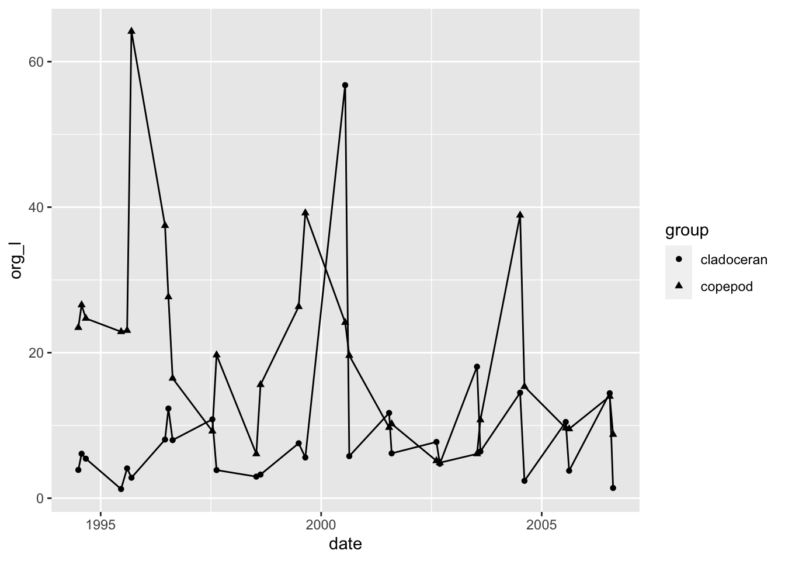
You can add a color = statement followed by a grouping variable and it will change colors based on the number of groups.
# Mapping a color to data groups ----
# If you add ", color=group" inside of the aes statement it will map a color to
# each group and it is sometimes necessary to add ", group = group"
ggplot(south_long.df, aes(date, org_l, color=group)) +
geom_point()+
geom_line()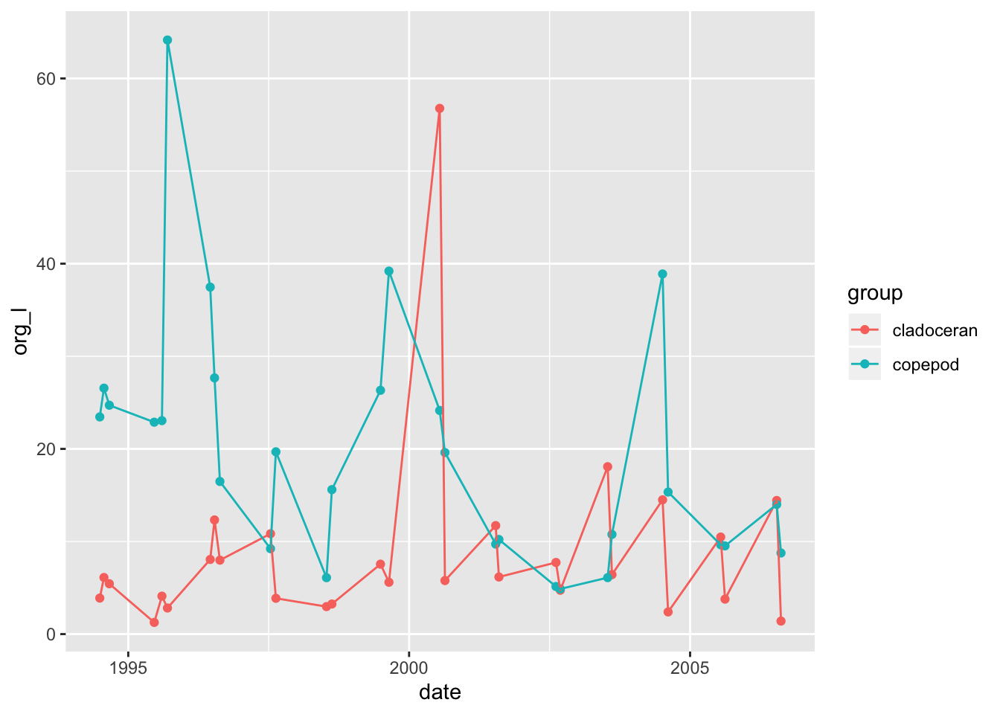
# Mapping shape, size, and linetype------
# this also applies to shape, linestyle and sizes (you won't want to do size)
# , shape = group
# , linetype = group
# , size = group
ggplot(south_long.df, aes(date, org_l, color=group, shape = group)) +
geom_point()+
geom_line()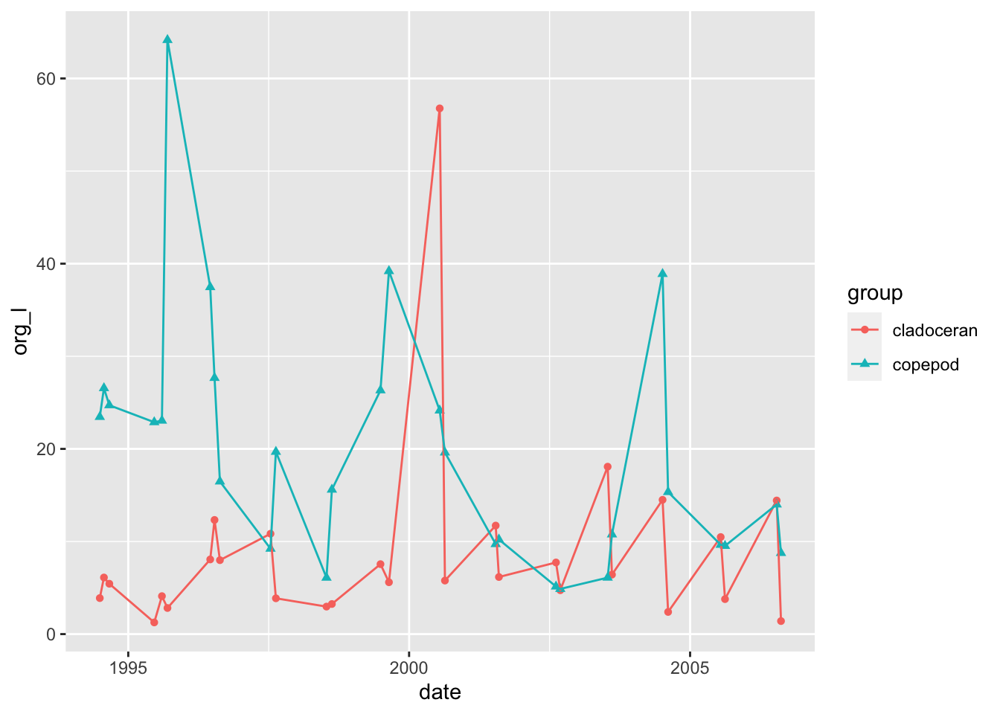
Looking at distributions of data using box and whisker plots can be very helpful this can be added as a layer to the plot
# Now lets look at some statistical plot
# try adding in geom_boxplot()
ggplot(south_long.df, aes(group, org_l, color=group)) +
geom_boxplot() +
geom_point() 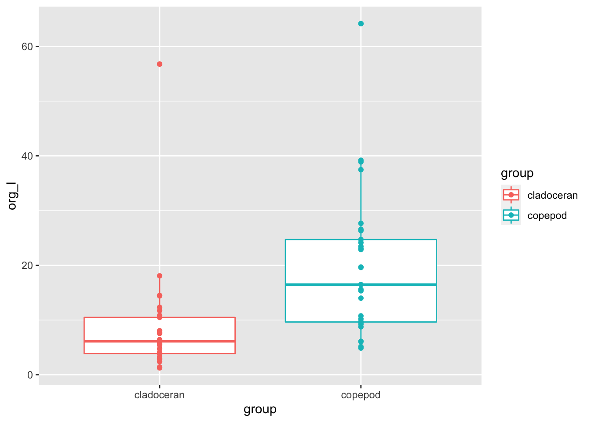
Notice above that the pints are overlapping and adding in a position statement to the geom_point statement can fix that
# to fix overlying points
ggplot(south_long.df, aes(group, org_l, color=group)) +
geom_boxplot() +
geom_point(position= position_jitterdodge(jitter.width = 0.3))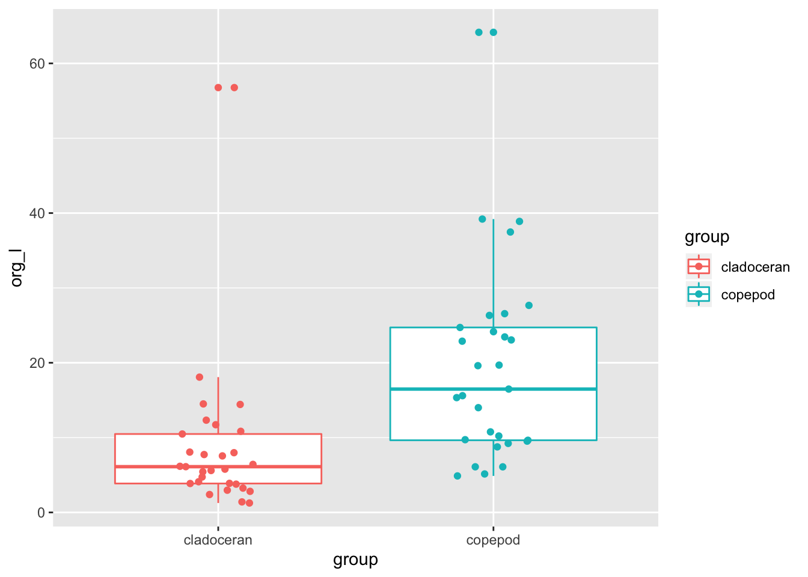
Once you have mapped a color, fill, or shape to your groups you can add in a scale_color_manual, scale_fill_manual, or scale_shape_manual statement to adjust these proporties.
# Final publication quality graph-----
# now we can add axes labels and custom colors
ggplot(south_long.df, aes(date, org_l, color=group)) + # sometimes necessary is , group = group
geom_point()+
geom_line() +
scale_color_manual(name = "Group",
values = c("blue", "red"),
labels = c("Cladoceran", "Copepod")) +
theme(axis.text.x = element_text(size=12, face="bold", angle=45, hjust=1))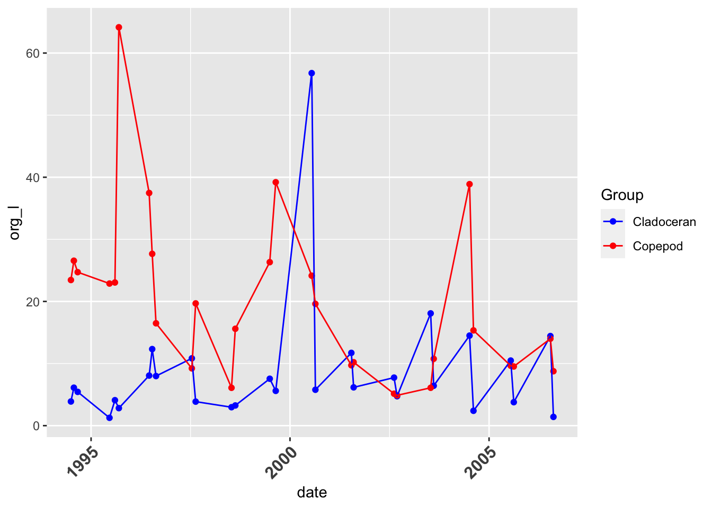
You can add in custom scales to the differnet axes. These can be scale_x(or y)_date
scale_x(or y)_datetime
scale_x(or y)_continuous
scale_x(or y)_log
etc…..
# Final publication quality graph-----
# now we can add axes labels and custom colors
ggplot(south_long.df, aes(date, org_l, color=group)) + # sometimes necessary is , group = group
geom_point()+
geom_line() +
labs(x = "Date", y = expression(bold("Animals (No. L"^-1*")"))) +
scale_x_date(date_breaks = "3 month",
limits = as_date(c('1994-06-01', '2006-12-31')),
labels=date_format("%Y-%m-%d"), expand=c(0,0)) +
scale_color_manual(name = "Group",
values = c("blue", "red"),
labels = c("Cladoceran", "Copepod")) +
theme(axis.text.x = element_text(size=12, face="bold", angle=45, hjust=1))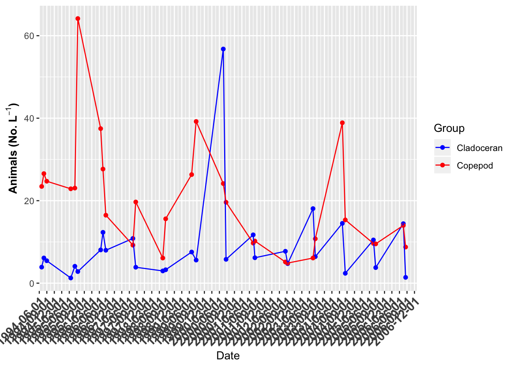
You can also change the data breaks in a simple manner
# Note here the labels on the X Axis are too frequent - try changing this below....
# try 6 months, 12 months, 1 years, 52 weeks
ggplot(south_long.df, aes(date, org_l, color=group)) + # sometimes necessary is , group = group
geom_point()+
geom_line() +
labs(x = "Date", y = expression(bold("Animals (No. L"^-1*")"))) +
scale_x_date(date_breaks = "52 weeks",
limits = as_date(c('1994-06-01', '2006-12-31')),
labels=date_format("%Y-%m-%d"), expand=c(0,0)) +
scale_color_manual(name = "Group",
values = c("blue", "red"),
labels = c("Cladoceran", "Copepod")) +
theme(axis.text.x = element_text(size=12, face="bold", angle=45, hjust=1))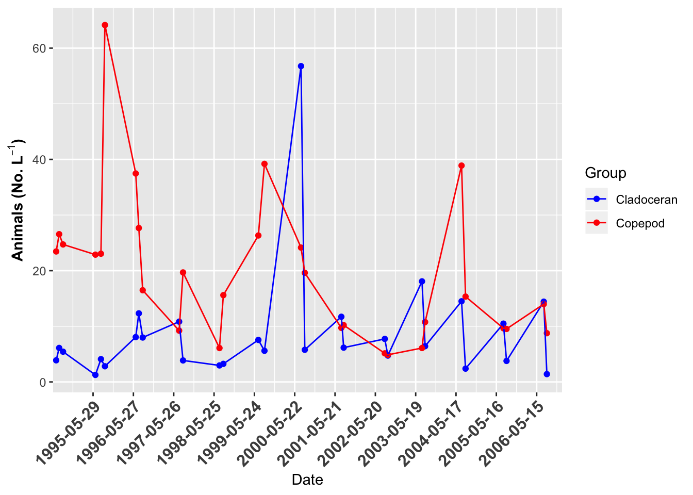
You can take axes labels to the next step with the expression statment.
# Final publication quality graph-----
# now we can add axes labels and custom colors
ggplot(south_long.df, aes(date, org_l, color=group)) + # sometimes necessary is , group = group
geom_point()+
geom_line() +
labs(x = "Date", y = expression(bold("Animals (No. L"^-1*")"))) +
scale_x_date(date_breaks = "3 month",
limits = as_date(c('1994-06-01', '2006-12-31')),
labels=date_format("%Y-%m-%d"), expand=c(0,0)) +
scale_color_manual(name = "Group",
values = c("blue", "red"),
labels = c("Cladoceran", "Copepod")) +
theme(axis.text.x = element_text(size=12, face="bold", angle=45, hjust=1)) You can also break up data by facetting the data.
The use of facet_wrap and facet_grid only differ slightly
### Facet_wrap
# Facetting graphs -----
# So lets begin to break it up a bit more... this is a busy graph... what
# if we wanted to see two separate graphs?
# Facet wrap ----
# sort of flows graphs around by a variable
ggplot(south_long.df, aes(date, org_l, color=group)) + # sometimes necessary is , group = group
geom_point()+
geom_line() +
labs(x = "Date", y = expression(bold("Animals (No. L"^-1*")"))) +
scale_x_date(date_breaks = "12 month",
limits = as_date(c('1994-06-01', '2006-12-31')),
labels=date_format("%Y-%m-%d"), expand=c(0,0)) +
theme(axis.text.x = element_text(size=12, face="bold", angle=45, hjust=1)) +
scale_color_manual(name = "Group",
values = c("blue", "red"),
labels = c("Cladoceran", "Copepod")) +
facet_wrap(~group)# Facet_grid -----
# lets you make a grid of one or two variables in a grid
ggplot(south_long.df, aes(date, org_l, color=group)) + # sometimes necessary is , group = group
geom_point()+
geom_line() +
labs(x = "Date", y = expression(bold("Animals (No. L"^-1*")"))) +
scale_x_date(date_breaks = "12 month",
limits = as_date(c('1994-06-01', '2006-12-31')),
labels=date_format("%Y-%m-%d"), expand=c(0,0)) +
theme(axis.text.x = element_text(size=12, face="bold", angle=45, hjust=1)) +
scale_color_manual(name = "Group",
values = c("blue", "red"),
labels = c("Cladoceran", "Copepod")) +
facet_grid(.~group) # rows by columns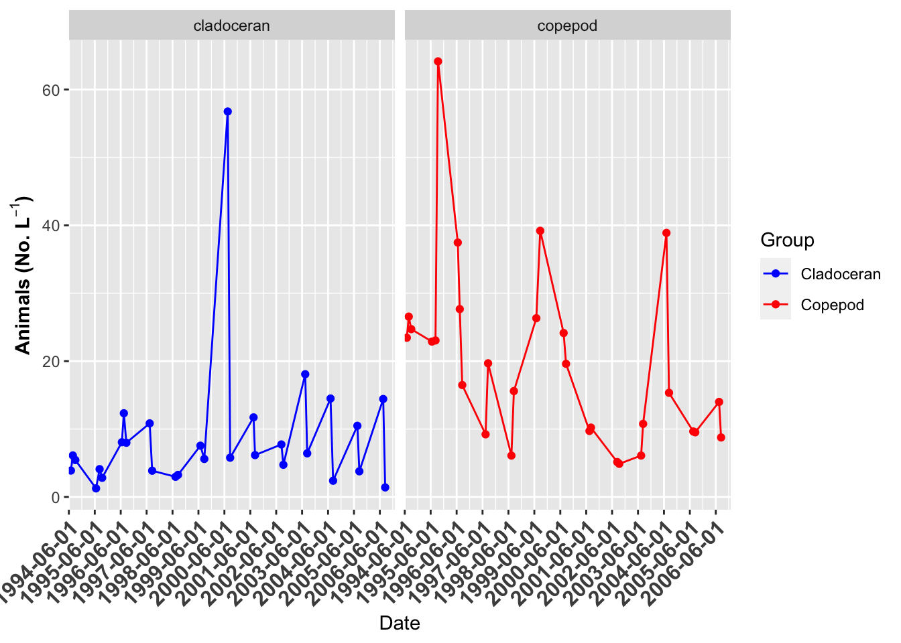
# Facet_grid vertical ----
ggplot(south_long.df, aes(date, org_l, color=group)) + # sometimes necessary is , group = group
geom_point()+
geom_line() +
labs(x = "Date", y = expression(bold("Animals (No. L"^-1*")"))) +
scale_x_date(date_breaks = "12 month",
limits = as_date(c('1994-06-01', '2006-12-31')),
labels=date_format("%Y-%m-%d"), expand=c(0,0)) +
theme(axis.text.x = element_text(size=12, face="bold", angle=45, hjust=1)) +
scale_color_manual(name = "Group",
values = c("blue", "red"),
labels = c("Cladoceran", "Copepod")) +
facet_grid(group~.) # rows by columns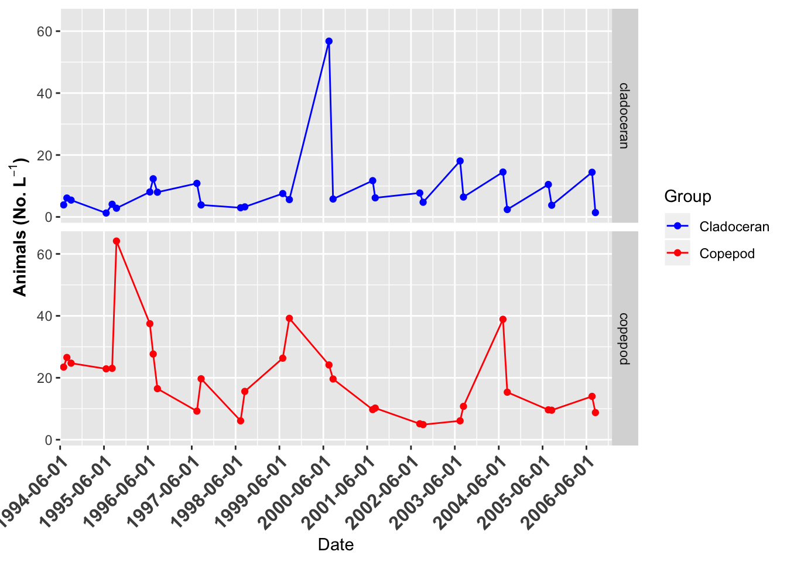
You can also do custom lables and titles for each facet using labeller.
# Relabelling facet titles -----
# now if we wanted to relabel the graphs we can do that as well
ggplot(south_long.df, aes(date, org_l, color=group)) + # sometimes necessary is , group = group
geom_point()+
geom_line() +
labs(x = "Date", y = expression(bold("Animals (No. L"^-1*")"))) +
scale_x_date(date_breaks = "12 month",
limits = as_date(c('1994-06-01', '2006-12-31')),
labels=date_format("%Y-%m-%d"), expand=c(0,0)) +
theme(axis.text.x = element_text(size=12, face="bold", angle=45, hjust=1),
strip.background = element_rect(fill = NA),
strip.text = element_text(size = 14, face = "bold", hjust = 0)) +
scale_color_manual(name = "Group",
values = c("blue", "red"),
labels = c("Cladoceran", "Copepod")) +
facet_grid(.~group,
labeller = labeller(group = c("cladoceran" = "a) Cladoceran",
"copepod" = "b) Copepod"))) # rows by columns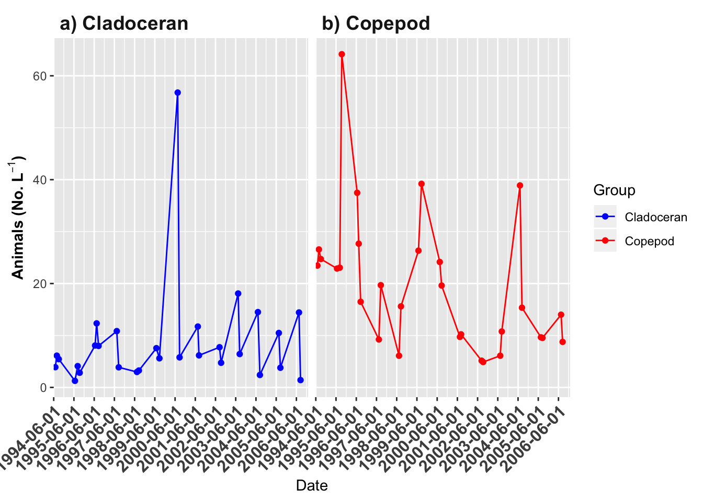